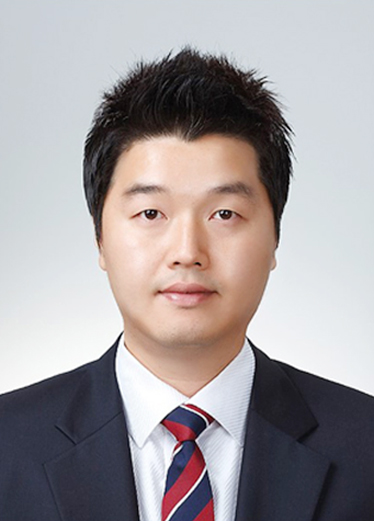
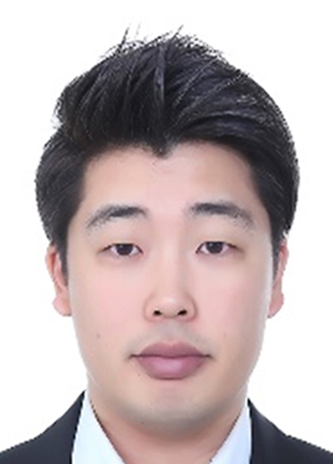
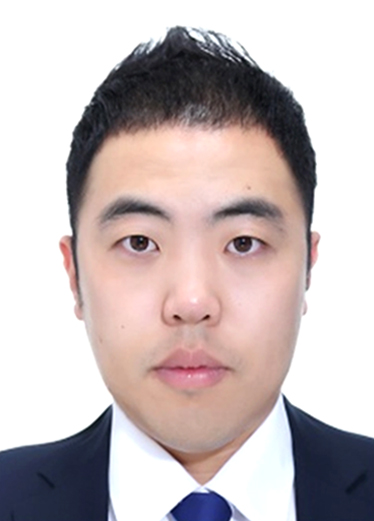
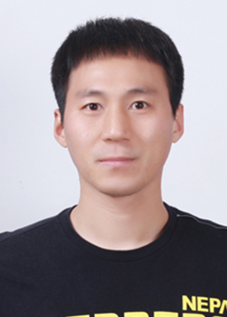

프로필

장순석
20년차
학력
단국대학교 특수교육대학원 물리작업 전공(수료)
경력
현 이너피스운동재활센터 대표
현 이너피스재활데이케어센터 대표
현 한국작업운동협회 부회장
현 한국우에다연구회 경기도회 이사
현 재활치료연구회 강사
전 보바스기념병원(2006)
전 라파재활센터 부원장(2015)
교육
한국운동재활전문지도자 2급
Bobath adevanced course
UEDA adevanced course
Bobath Normal Development course
Vital stim therapy
Anatomy Trains in Structure & Function course
손진철
(월~금)
학력
용인대학교 일반대학원 (물리치료전공) 석사
경력
현 이너피스운동재활센터 고문
현 Human Movement Academy(HMA) 원장
현 보바스 상급강좌 강사(Bobath Advanced Course Instructor)
현 보바스 기본강좌 강사(Bobath Basic Course Instructor)
현 보바스 국제강사 협의회 회원(International Bobath Instructors Training Association – IBITA)
전 보바스기념병원 재활센터 고문(2020 ~ 2021)
전 보바스 협회 협회장 역임(2014 ~ 2020)
전 신성대학교 겸임교수(2009 ~ 2016)
전 보바스기념병원 재활치료 부장 (2003 ~ 2020)
전 가톨릭대학교 부천성모병원 재활의학과 (1990 ~ 2003)
교육
Instrucductory Course at Bobath Memorial Hospital, Osaka, Japan(2014)
Bobath Basic Course At Clinic Sasana Husada, Jakarta, Indonesia(2008)
Bobath Basic Course an University of Indonesia Esa Unggul, Jakarta, Indonesia(2006)
Bobath Normal Development course
Seminar for Annual Congress of Indenesia Physical Therapy Association at Jogjakarta, Indonesia(2004)
Bobath Advanced course 교육 진행(2014 ~ 현재)
Bobath Movement analysis course 진행(2005 ~ 현재)
Bobath Basic course 교육 진행(2005 ~ 현재)
Bobath Introductory course 교육 진행(2005 ~ 현재)

이철강
16년차
학력
연세대학교 물리치료과
경력
현 이너피스재활데이케어센터 원장
전 보바스기념병원(2010~)
전 녹엽연태보바스(2016~2018.3)
전 보바스기념병원(2018~2018)
교육
한국운동재활전문지도자 2급
Bobath introduce course
Bobath basic course
Bobath Normal Development course
KEMA Advanced & Research course
UEDA basic course
Anatomy Trains in Structure & Function course

신홍주
17년차
학력
가천대학교 특수치료대학원 작업치료학(석사)
경력
현 이너피스운동재활센터 원장(서현점)
전 보바스기념병원(2009~)
전 녹엽연태보바스(2015.8~2018.3)
전 보바스기념병원(2018~2019)
교육
한국운동재활전문지도자 2급
Bobath introduce course
Bobath basic course
Vital stim therapy(연하장애)
연하장애 전문가 과정
Ueda Introduce course
UEDA basic course
김근혁
17년차
학력
광주보건대학 물리치료과
경력
현 이너피스운동재활센터 원장(미금점)
전 성남시노인보건센터(2009)
전 보바스기념병원(2011)
전 베데스다 병원 팀장(2015)
교육
한국운동재활전문지도자 2급
Bobath introduce course
Bobath basic course
Bobath advanced course
홍기동
18년차
학력
백석대학교 대학원 석사
경력
현 이너피스 센터장
전 보바스기념병원(2008)
전 로이재활병원 팀장(2012)
전 조이재활요양병원 실장(2013)
전 로이재활병원 팀장(2016~)
교육
Bobath introduce course
Bobath basic course
그라스톤 테크닉 자격증
UEDA basic course
UEDA adevanced course
척추교정임상전문가 자격증
정형도수전문물리치료사 자격증
Anatomy Trains in Structure & Function course
한국운동재활전문지도자2급
임상열
22년차
학력
서울보건대(현 을지대) 물리치료과
신성대학교 심화과정(보건학사)
경력
현 이너피스 센터장
전 보바스 경기도협회 이사
전 보바스기념병원(2004)
전 성남시노인보건센터(2008)
전 보바스기념병원(2011)
전 베데스다 병원 치료부장(2015)
교육
Bobath introduce course
Bobath basic course
Bobath Advanced course
대한림프도수치료학회 기본과정
김용연
25년차
학력
용인대학교 일반대학원 (물리치료전공) 박사
경력
현 이너피스운동재활센터 자문위원
현 동남보건대학 물리치료과 조교수
현 대한스포츠의학회 및 대한선수트레이너협회 연수위원
현 대한배구협회 의무위원
현 프로스포츠협회 아카데미 연수강사 (야구, 축구, 농구, 배구, 골프)
현 대한선수 트레이닝연구소 연수위원
전 두산베어스 프로야구단 선수트레이너(2001)
전 국가대표 테니스팀 물리치료사 및 트레이너(2002)
전 한국도로공사 여자프로배구단 물리치료사(2003)
전 국가대표 남자 탁구팀 물리치료사(2010)
전 현대캐피탈 남자프로배구단 물리치료사(2012)
전 OK저축은행 남자배구단 선수트레이너(2013)
장청훈
17년차
학력
용인대학교 물리치료학과 졸업
경력
현 이너피스 강사
전 보바스기념병원(2009~)
전 녹엽연태보바스(2016~2018.3)
전 보바스기념병원(2018~2020)
교육
Bobath introduce course
Bobath basic course
Bobath Advanced course

이고연
17년차
학력
동남보건대학교 물리치료학과 졸업
경력
현 이너피스 강사
전 보바스기념병원 (2009.2 ~ 2016.2)
전 녹엽연태보바스 (2016.3 ~ 2018.3)
전 보바스기념병원 (2018.8 ~ 2022.2)
교육
OMT (Orthopedic Medical Taping)
OMT Kaltenborn (lower extremity course)
BCD (By Classification Disease Taping)
Bobath introduce course
Bobath Movement Analysis
Bobath basic course
Bobath Advanced course
한주희
18년차
학력
용인대학교 재활복지대학원 언어재활학과 (석사)
경력
현 이너피스 언어재활 강사
전 보바스기념병원(2006)
전 보바스기념병원 언어치료실(2008)
전 이선아언어심리상담센터 언어재활 강사(2016)
교육
언어재활사1급, 물리치료사
Bobath introduce course
Bobath basic course